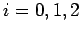

Inhalt Index DeskTop Bronstein

 Wahrscheinlichkeitsrechnung und Mathematische Statistik Wahrscheinlichkeitsrechnung Stochastische Prozesse und stochastische Ketten Grundbegriffe, Markoffsche Ketten
Wahrscheinlichkeitsrechnung und Mathematische Statistik Wahrscheinlichkeitsrechnung Stochastische Prozesse und stochastische Ketten Grundbegriffe, Markoffsche Ketten


Hängen bei einer MARKOFFschen Kette mit endlichem Zustandsraum die Übergangswahrscheinlichkeiten (16.112) nicht von der Zeit ab, d.h., es gilt
dann spricht man von einer homogenen MARKOFFschen Kette. Zu einer homogenen MARKOFFschen Kette mit dem endlichen Zustandsraum gehört daher die Übergangsmatrix
mit
| Beispiel |
|
Die Anzahl der belegten, von einer Telefonzentrale abgehenden Leitungen kann durch eine homogene MARKOFFsche Kette modelliert werden. Zur Vereinfachung wird angenommen, daß nur zwei Leitungen vorhanden sind. Es gibt also die Zustände . Die Zeiteinheit sei z.B. 1 Minute. Für die Übergangsmatrix pij wird die folgende Belegung angenommen: |
Hinweis: Jede quadratische Matrix vom Typ (N,N) mit den Eigenschaften (16.115b, 16.115c) wird als stochastische Matrix bezeichnet. Ihre Zeilenvektoren heißen stochastische Vektoren.
Bei einer homogenen MARKOFFschen Kette hängen zwar die Übergangswahrscheinlichkeiten nicht von der Zeit ab, aber die Verteilung der Zufallsgrößen Xt zu einem Zeitpunkt t ist durch die Wahrscheinlichkeiten
mit
gegeben, da sich der Prozeß zum Zeitpunkt t mit Sicherheit in irgend einem der Zustände befindet. Die Wahrscheinlichkeiten (16.116a) können zu dem Wahrscheinlichkeitsvektor
zusammengefaßt werden. Der Wahrscheinlichkeitsvektor  ist ein stochastischer Vektor. Er beschreibt die Verteilung auf die Zustände der homogenen MARKOFFschen Kette zum Zeitpunkt
ist ein stochastischer Vektor. Er beschreibt die Verteilung auf die Zustände der homogenen MARKOFFschen Kette zum Zeitpunkt  .
.